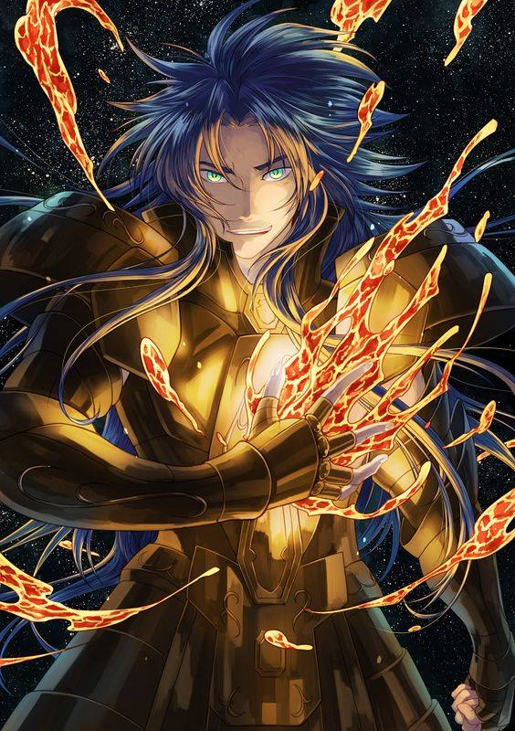

O porque o Deimos é o mais forte

Aos 13 anos ganhou a armadura de ouro de seu mestre/pai, com a armadura em mãos selou tifão dentro do corpo de dois cavaleiros de bronze, bateu no seu tio Kagaho de Behnu Estrela Celeste da ira sendo um do mais fortes espectros das tropas do imperador Hades, recusou ao posto de grande Mestre do Santuario duas vezes, sobreviveu à duas Guerras Santas, está vivo e bem com seus 756 anos, treinou a nova geração e infelizmente acabou sendo sugado pelo imperador seu antigo vô, familia complicada.